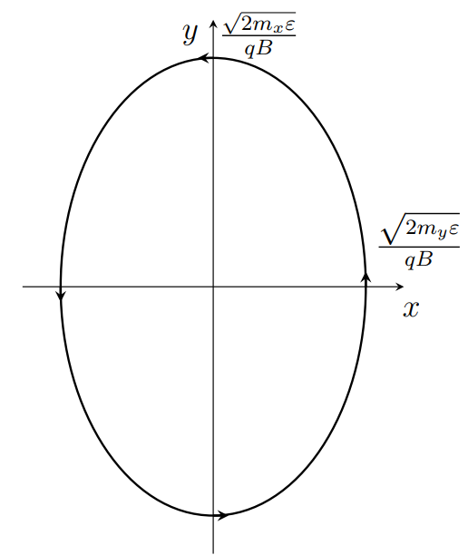
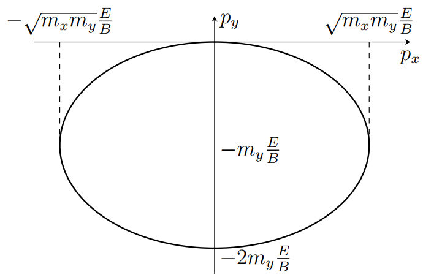
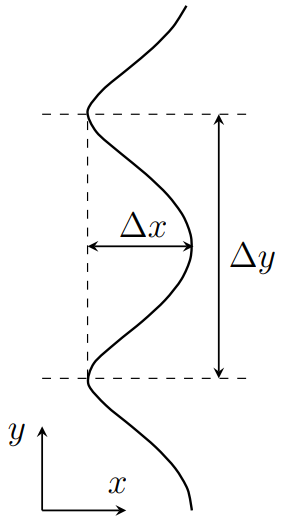

Y23 (2023) — English translation
Let's express the speed of the electron in terms of its momentum: $$ v_x = \frac{\partial \varepsilon}{\partial p_x} = \varepsilon_0 a \sin (a p_x), $$similarly for remaining two component $$ v_y = \varepsilon_0 a \sin(a p_y), \; v_z = \varepsilon_0 a \sin(a p_z). $$From the equation motion $\dfrac{d}{dt}\vec{p} = \vec{F}$. Express acceleration through derivative momentum: $$ a_x = \dot{v}_x = \varepsilon_0 a^2 \cos (a p _x) \dot{p}_x = \varepsilon_0 a^2 \cos(a p_x) F_x. $$The formulas for the remaining components are similar. For impulse values from the condition
The electron is acted upon by the force $F_x = - q E$, so the momentum $$ p_x = - q E t, $$and/but correspond velocity $$ v_x = -a \varepsilon_0 \sin(aqE t). $$Remaining projection velocity equal zero. Integrate, find dependence coordinate $x$ as a function of time
Current density is expressed in terms of electron speed and concentration $$ j_x = - n q v_x = n q a \varepsilon_0 \sin (a q E t). $$
The equation of motion is $$ \dot{\vec{p}} = - q \vec{v} \times \vec{B}. $$Derivative energy by time $$ \frac{d \varepsilon} {dt} = \frac{\partial \varepsilon}{\partial p_x} \dot{p}_x + \frac{\partial \varepsilon}{\partial p_y} \dot{p}_y +\frac{\partial \varepsilon}{\partial p_z} \dot{p}_z = v_x \dot{p}_x + v_y \dot{p}_y + v_z \dot {p}_z = \vec{v} \dot{\vec{p}}. $$Substitute expression for derivative momentum, obtain $$ \dot{\varepsilon} = \vec{v} \cdot\left(- q \vec{v} \times \vec{B}\right) = 0. $$Multiply equation of motion скалярно on magnetic field obtain $$ \frac{d}{dt} (\vec{B}{\vec{p}}) = \vec{B} \dot{\vec{p}} = - q \vec{B} (\vec{v} \times \vec{B}) = 0, $$that is, the projection of the impulse onto the magnetic field is constant.
Let's write the equations of motion: \begin{align*} m_x\dot{v}_x &= - q v_y B;\\ m_y \dot{v}_y &= q v_x B. \end{align*} Let's exclude $v_y$ from the first equation by differentiating it and expressing $\dot{v}_y$ from the second equation. We will receive $$ m_x \ddot{v}_x = - q \dot{v}_y B = - \frac{q^2 B^2}{m_y} v_x, $$that is $$ \ddot{v}_x = - \frac{q^2 B^2}{m_x m_y} v_x. $$This equation гармонических oscillation with frequency $$ \omega = \frac{qB}{\sqrt{m_x m_y}}. $$
The dependence of speed on time has the form $$ v_x = A \cos (\omega t + \varphi), $$where amplitude $A$ one can find, know energy electron: $$ A = \sqrt{\frac{2\varepsilon}{m_x}}. $$Second component velocity one can find from the equation motion $$ v_y = - \frac{m_x}{q B} \dot{v}_x = \sqrt{\frac{2\varepsilon}{m_x}} \frac{\omega}{qB} \sin(\omega t + \varphi) = \sqrt{\frac{2 \varepsilon}{m_y}} \sin (\omega t + \varphi). $$Integrate, obtain trajectory particle \begin{align*} x(t) &= \sqrt{\frac{2 \varepsilon}{m_x}} \frac{1}{\omega} \sin(\omega t + \varphi) = \frac{\sqrt{2 m_y \varepsilon}}{q B} \sin (\omega t + \varphi);\\ y(t ) &= - \frac{\sqrt{2 m_x \varepsilon}}{qB} \cos (\omega t + \varphi). \end{align*} Thus, trajectory represent itself ellipse with semi-axis $$ A_x = \frac{\sqrt{2 m_y \varepsilon}}{q B},\; A_y = \frac{\sqrt{2 m_x \varepsilon}}{qB}. $$The movement occurs counterclockwise.

Taking into account the electric field, the equations of motion are \begin{align*} m_x\dot{v}_x &= -qE- q v_y B;\\ m_y \dot{v}_y &= q v_x B. \end{align*} Let us introduce a new variable $u_y$ using the relation $$ v_y = - \frac{E}{B} + u_y, $$then equations of motion assume such same form, as and in previous part: \begin{align*} m_x\dot{v}_x &= - q u_y B;\\ m_y \dot{u}_y &= q v_x B. \end{align*} Initial condition $$ v_x (0) = 0 ,\; v_y(0) = 0, \; u_y(0) = \frac{E}{B}. $$Taking into account this solution $$ v_x = -\sqrt{\frac{m_y}{m_x}}\frac{E}{B} \sin \omega t;\; v_y =- \frac{E}{B}(1- \cos \omega t). $$Then momentum $$ p_x =- \sqrt{m_x m_y} \frac{E}{B} \sin \omega t, \; p_y = -m_y \frac{E}{B}(1 - \cos \omega t ). $$

Integrating the speeds from the previous point, we get
Let us write down the equations of motion $$ \dot{\vec{p}} = - q \vec{v} \times \vec{B} = - q \dot{\vec{r}}\times \vec{B}. $$Integrate, obtain $$ \Delta \vec{p} = - q \Delta \vec{r} \times \vec{B}. $$Multiply this equality vector on $\vec{B}$. $$ \Delta \vec{p} \times \vec{B} = - q(\Delta \vec{r} \times \vec{B}) \times \vec{B} = q B^2 \Delta \vec{r}. $$Thus, vector displacement one can express through change momentum $$ \Delta \vec{r} = \frac{1}{qB^2} \Delta \vec{p} \times \vec{B}. $$ Consider first in импульсном space. From постоянства energy follow, that годограф momentum – surface $$ \frac{p^2_y}{2m_y} + \varepsilon_0 (1 - \cos ap_x) = \varepsilon = const. $$Equation this surface one can represent in form $$ p_y = \pm \sqrt{2 m_y (\varepsilon - \varepsilon _0 + \varepsilon _0 \cos a p_x)}. $$in that case, if $\varepsilon \le 2 \varepsilon_0$, годограф represent itself замкнутую curve. Then trajectory also be замкнутой curve. If same $\varepsilon > 2 \varepsilon_0$, годограф momentum – незамкнутая curve, direct along axis $x$. Then trajectory motion particle - curve, direct along $y$, moreover dependence $x(y)$ – periodic. Find period this function and width полосы along axis $x$, which it занимает. $$ \Delta y = \frac{1}{qB} \frac{2\pi}{a}, \; \Delta x = \frac{1}{qB} \Delta p_y = \frac{\sqrt{2 m_y}}{qB} (\sqrt{\varepsilon} - \sqrt{\varepsilon - 2 \varepsilon _0}). $$

Let's write down the laws of conservation of energy and momentum: $$ u p = u q_1 + u q_2,\; \vec{p} = \vec{q}_1 + \vec{q}_2. $$Since length vector $\vec{p}$ is equal to the sum of the lengths of the remaining two vectors, all three vectors must be directed in the same direction.
From the law of conservation of momentum $$ \vec{q}_2 = \vec{p} - \vec{q}_1. $$Hence $$ q_2^2 = p^2 + q_1^2 - 2 p q_1 \cos \theta_1 = p^2 + q_1^2 - 2 p q_1 (1 - \theta_1^2/2) = (p - q_1)^2+ p q_1 \theta_1^2. $$Извлечем root and expand in ряд to требуемого order $$ q_2 = \sqrt{ (p - q_1)^2+ p q_1 \theta_1^2} \approx p - q_1 + \frac{p q_1}{2(p - q_1)} \theta_1^2 $$
Let us write the law of conservation of energy $$ u p + \alpha p^3 = u q_1 + \alpha q_1^3 + u q_2 + \alpha q_2^3. $$Substitute expression for $q_2$: $$ u p + \alpha p^3 = u q_1 + \alpha q_1^3 + u \left(p - q_1 + \frac{p q_1}{2(p - q_1)} \theta_1^2\right) + \alpha \left( p - q_1 + \frac{p q_1}{2(p - q_1)} \theta_1^2\right)^3. $$Раскроем bracket and оставим вклады order $\theta_1^2$: $$ \alpha p^3 = \alpha q^3 + \frac{u p q_1}{2 (p - q_1)} \theta_1^2 +\alpha (p - q_1)^3 + \frac{3 \alpha}{2} p q_1 (p - q_1)\theta_1^2. $$Перенесем term, not depend from angle, налево: $$ \alpha (p^3 - q_1^3 - (p-q_1)^3) = \frac{u p q_1 \theta_1^2}{2(p - q_1)} \left( 1 + \frac{3 \alpha}{u } (p - q_1)^2\right).$$Second term in bracket in right part one can neglect in force condition $\alpha p^3 \ll u p$, in left part раскроем bracket and obtain $$ 3 \alpha (p - q_1) p q_1 = \frac{u p q_1 \theta_1^2}{2(p - q_1)}. $$Hence $$ (p-q_1 )^2 = \frac{u }{6 \alpha} \theta_1^2, \; q_1 = p - \sqrt{\frac{u}{6 \alpha}} \theta_1. $$
The equation in the previous paragraph has a solution if $\alpha > 0$.
The maximum angle is achieved at the minimum momentum of the emitted phonon $q_1 \to 0$. Then from the expression for $q_1$ we find $$ \theta_{\max} = \sqrt{\frac{6 \alpha}{u}} p. $$All problem решалась in the approximation small angle. This approximation работает for condition $\theta_{max} \ll 1$, that is $$ p \ll \sqrt{\frac{u}{\alpha}}. $$
From the results $\mathrm{C3}$ it follows that the phonon momenta are expressed in terms of emission angles as $$ q_1 = p - \sqrt{\frac{u}{6 \alpha}} \theta_1, \; q_2 = p - \sqrt{\frac{u}{6 \alpha}} \theta_2. $$ Write projection law conservation momentum on axis, perpendicular direction motion исходного фонона: \begin{align*} q_1 \theta_1 &= q_2 \theta_2, \\ p \theta_1 - \sqrt{\frac{u}{6 \alpha}} \theta_1^2 &= p \theta_2 - \sqrt{\frac{u}{6 \alpha}} \theta_2^2. \end{align*} Перегруппируем term: $$ p(\theta_1 - \theta_2) = \sqrt{\frac{u}{6 \alpha}} (\theta_1^2 -\theta_2^2), \; p = \sqrt{\frac{u}{6 \alpha}} (\theta_1 + \theta_2). $$